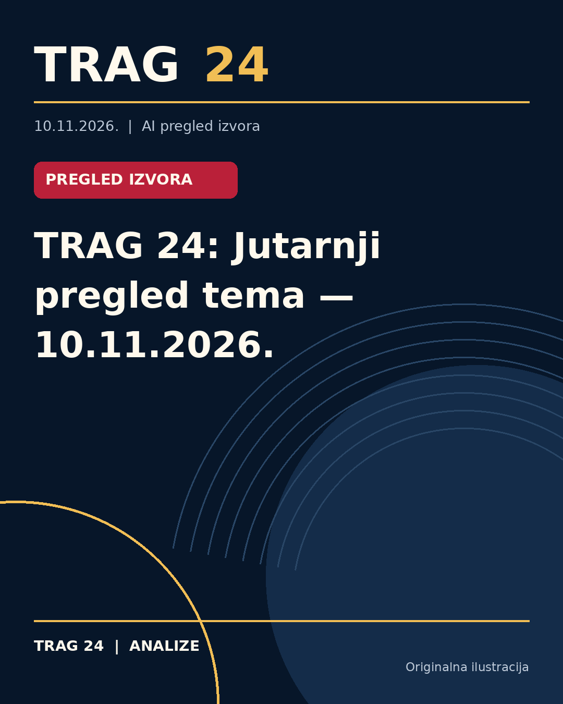

TRAG 24: Jutarnji pregled tema — 10.11.2026.

Automatski pregled medijskih objava iz Srbije. Navodi su preneti iz označenih izvora i nisu nezavisno potvrđeni od strane redakcije TRAG 24.
Društvo — Informer objavljuje: „Zatvara se okretnica "Sremčica": Evo kuda će javni prevoz”. Detalji su dostupni u izvornom članku.
Društvo — Blic objavljuje: „"NAS DVOJE SMO ISTI" Bivša žena Igora Kojića nakon razvoda nije mogla da se oporavi, a on odmah našao novu: "Treba mi vremena da odbolujem"”. Detalji su dostupni u izvornom članku.
Društvo — Kurir objavljuje: „OTKRILI ZAŠTO VLAHOVIĆ NE IGRA ZA SRBIJU: Evo šta će Dušan raditi za vreme mečeva reprezentacije...”. Detalji su dostupni u izvornom članku.
Politika — Nova.rs objavljuje: „Studentski pokret i dalje odlučuje na plenumima oko kandidata za funkcije u Skupštini i Vladi: Da li ovaj sistem može da opstane i posle preuzimanja vlasti?”. Detalji su dostupni u izvornom članku.
Za potpuniju procenu ovih događaja potrebno je proveriti zvanična saopštenja, dokumenta i nezavisne potvrde. Ovaj pregled nije istraživačka analiza.
Izvori
- https://informer.rs/drustvo/vesti/1168465/sremcica-okretnica-radovi-zatvaranje-r
- https://www.blic.rs/zabava/bivsa-zena-igora-kojica-nakon-razvoda-nije-mogla-da-se-oporavi-mi-smo-isti/1yqv4h7
- https://www.kurir.rs/sport/fudbal/10157904/evo-zasto-vlahovic-ne-igra-za-srbiju
- https://nova.rs/vesti/politika/studentski-pokret-i-dalje-odluuje-na-plenumima-oko-kandidata-za-funkcije-u-skuptini-i-vladi-da-li-ovaj-sistem-moe-da-opstane-i-posle-preuzimanja-vlasti/
Ova analiza je pripremljena uz pomoć veštačke inteligencije na osnovu javno dostupnih izvora. Navodi izvora nisu nužno nezavisno potvrđeni.